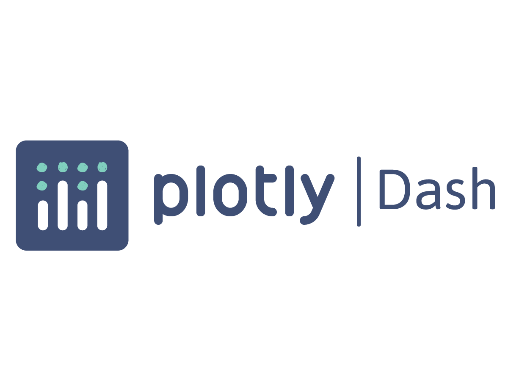

Welcome to the digital showcase of a passionate technologist with a keen focus on data engineering and visualization.
Here, you will journey through meticulously designed projects that showcase my experience in Python, AWS,
Django, React, and Dash integrations, among other technologies. Fascinated by the art of transforming
abstract concepts into tangible solutions, this portfolio underscores an enthusiasm for engineering holistic
ideas.
In this project, an end-to-end data pipeline was constructed utilizing a combination of AWS services, including Amazon EC2, Amazon S3, Amazon Secrets Manager and Amazon RDS. Data extraction was enhanced with the strategic use of rotating proxies from zenrows, ensuring reliable and anonymous data extraction from an onlineshop. With cron, data was scheduled for regular extraction, transformation, and loading processes (ETL). Upon successful data extraction and storage in the postgres database, visualizations were crafted using a selfhosted version of the open source data visualization software Redash to derive meaningful insights. The project showcases a seamless integration of various technologies, from data extraction to visualization, exemplifying the capability to handle and present data effectively.
Github Repository
This project introduced a specialized Dash-based Python tool designed for dynamic
Sankey diagram generation, tailored for users wishing to decode relationships within
Excel data columns. The application
was developed based on the idea of wanting to easily (dynamically and automatically) visualizes
business transaction based data from ERP Systems to classify single business transactions.
The approach of writing a dynamic solution lead to an outcome that is applicable for
flowbased data of every domain. Through a user-friendly interface, it facilitates the upload
of Excel files, enabling interactive column selection, data filtering, and real-time
Sankey diagram visualization. Behind the scenes, the application is backed by
integral Python libraries including dash, pandas, base64, and io. A standout
feature is its fluid adaptability to user interactions, where the Sankey diagram
adjusts according to column and filter choices.
The application is hosted on
AWS Elastic Beanstalk, which manages the deployment, from auto-scaling to application
health monitoring. Integration with AWS CodePipeline and GitHub ensures that the
codebase is continuously integrated and deployed (CI- & CD- Pipeline), allowing
for real-time updates and streamlined version control.
This project presents a sophisticated integration of Django's robust backend capabilities with React's dynamic frontend functionalities. Designed as a web application, it seamlessly merges Django's web app structure with a JavaScript-driven React interface. Users can explore features like articles management, where they can edit and delete content. Python, JavaScript, Django, Django's REST framework, and react-router-dom are the key components of this web app. The interactive design is further complemented by the option to create user accounts using django's administration page (/admin), offering a more personalized experience. The application's dual-server nature lets users access both the frontend and the Django REST API, showcasing the power of decoupling in modern web development.
Github RepositoryThe project develops an (Data-) Enterprise Architecture Management for the fictional company DataWise Vision, focusing on data process redesign. It starts with an overview of the company and its business model. A SWOT analysis and process mapping assess the current state. The project then identifies improvements, evaluates data and technology architectures, and plans for migration to the new architecture. Governance and change management strategies are also outlined for implementation and future updates.
View Document